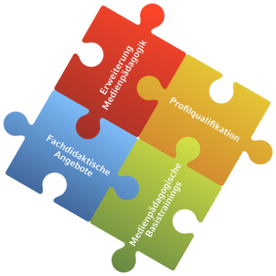
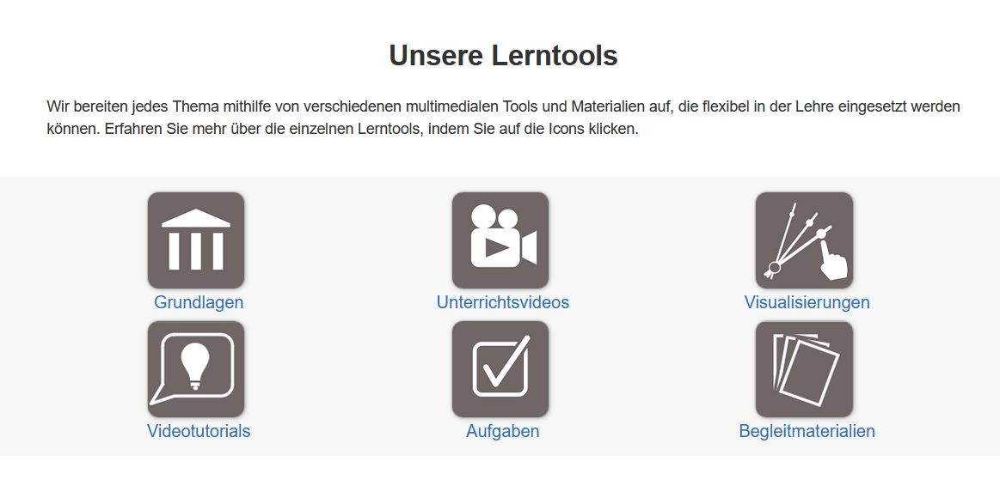
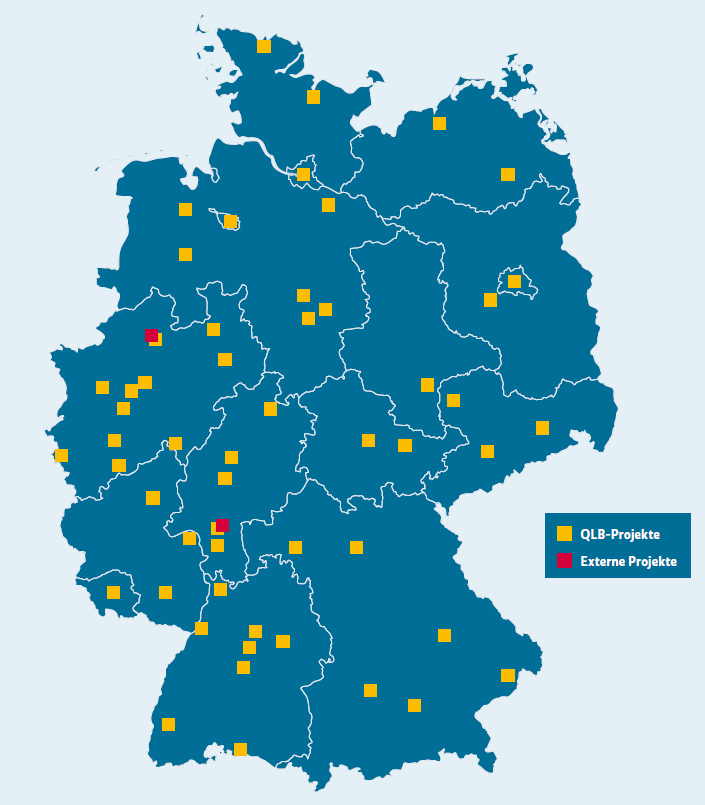

Ludwig-Maximilians-Universität
Lehrerbildung@LMU
Projekt: Medienbildung und Digitalisierung
"Das Kompetenznetzwerk Medienbildung und Digitalisierung (KMBD) ist Teil der aktuellen Förderphase des Projekts „Lehrerbildung@LMU“ (von Januar 2019 bis Dezember 2023) und baut darüber hinaus eng verzahnte kooperative Strukturen mit dem DigiLLab der LMU auf. Durch die Kooperation mit dem DigiLLab nutzen wir die Synergien, die zwischen beiden Projekten entstehen, optimal aus und verstetigen konzeptionelle Vorarbeiten sowie Forschungsarbeiten des KMBD." (DigiLLab LMU, o.D. b)
Das Projekt fokussiert neben der Weiterentwicklung der eigenen medienbezogenen Qualifizierungsmaßnahmen aus der ersten Förderphase den Aufbau eines Kooperationsnetzwerkes mit den Fachdidaktiken der LMU. Ziel ist die Koordination und konzeptuelle Abstimmung aller medienbezogenen Angebote im Lehramtsstudium der LMU. Zweitens ist die Validierung und Beforschung der erarbeiteten Konzepte und Instrumente im Rahmen von Forschungsschwerpunkten geplant, die sich unter anderem mit der Operationalisierung und simulationsbasierten Förderung medienbezogener Kernkompetenzen angehender Lehrkräfte beschäftigen (DigiLLab LMU, o.D. a).

Abbildung 14: Umfang der Qualifikationsangebote des DigiLLabs der LMU (Quelle: DigiLLab LMU, o.D. c)
Technische Universität München
Teach@TUM
Projekt: Toolbox Lehrerbildung
Die „Qualitätsoffensive Lehrerbildung“ gilt als Exzellenzinitiative für das Lehramtsstudium. Das Programm der TUM School of Education verfolgt zwei Ziele: die Lehramtsausbildung nach wissenschaftlichen Erkenntnissen zu gestalten sowie Fachwissenschaft, Fachdidaktik, Erziehungswissenschaft und Schulpraxis der MINT-Fächer optimal miteinander zu verbinden.
Das Projekt Teach@TUM strebt die Stärkung der Kompetenzorientierung und Evidenzbasierung der MINT Lehramtsstudiengänge an der TU München an. Es hat vier Komponenten, darunter die "Toolbox Lehrerbildung".
Im Webportal „Toolbox Lehrerbildung“ findest du kostenlose Videos, die Situationen aus der Schulpraxis veranschaulichen, interaktive Visualisierungen von Fachinhalten und Aufgaben zur Überprüfung ihres Lernfortschritts. (Technische Universität München, o.D.)

Abbildung 15: Lerntools der Toolbox Lehrerbildung der TUM (Technische Universität München, o.D.)
Weitere Standorte
Hier siehst du eine Übersichtskarte weiterer Projektstandorte in Deutschland. Über 85 Fördervorhaben und -teilvorhaben setzen sich mit verschiedenen Fragestellungen der Digitalisierung in der Lehrkräftebildung auseinander. Diese roten Vierecke weisen auf Forschungsprojekte außerhalb der Qualitätsoffensive Lehrerbildung (QLB) hin, die sich jedoch ebenfalls mit dem Thema Digitalisierung befassen (BMBF, o.D.).

Abbildung 16: Weiterere Projektstandorte der Qualitätsoffensive Lehrerbildung (Quelle: BMBF, Jan. 2022, S.36)